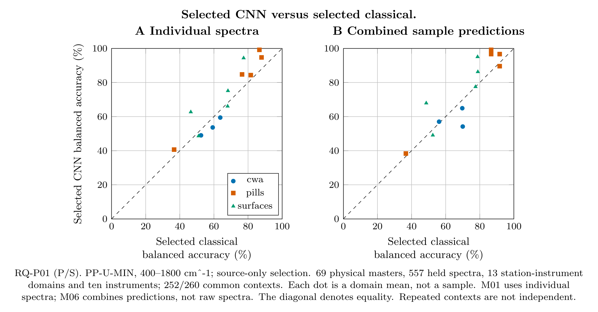
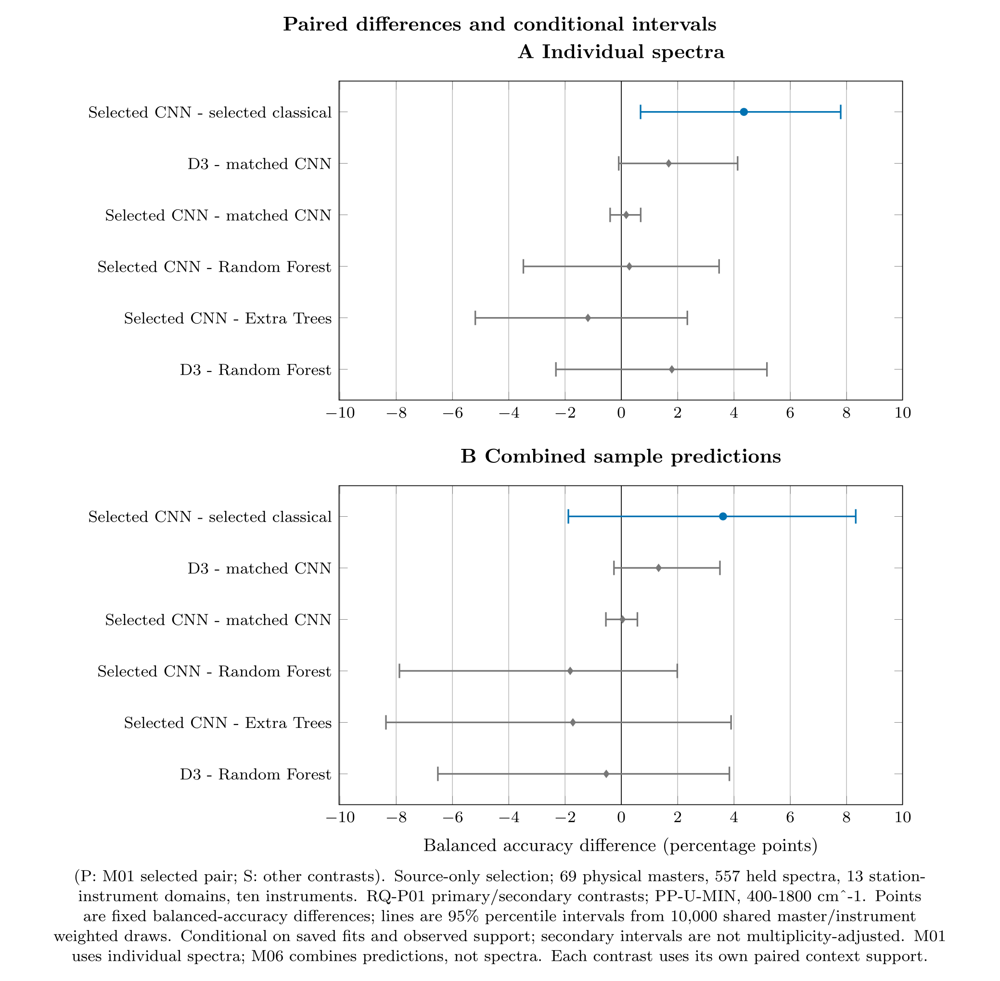
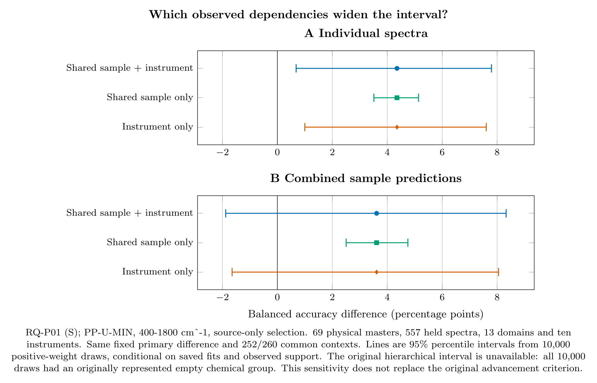
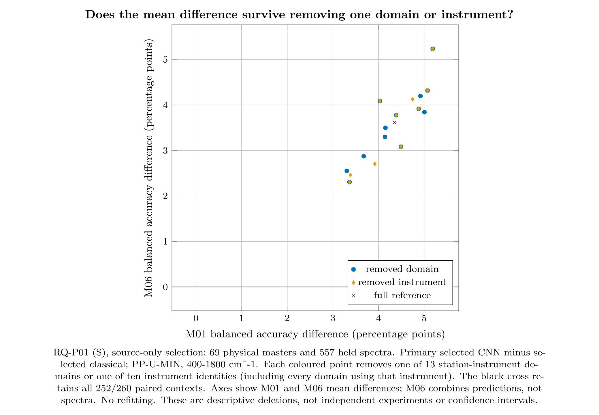

NATO field-trial SERS: uncertainty and stability
The selected CNN exceeds the selected classical procedure by 4.36 percentage points for individual spectra; the added conditional interval is 0.68–7.79 points. This does not establish an advantage over Random Forest or Extra Trees, or a reliable benefit from the extra neural losses.
All results use existing predictions: no new training or preprocessing. There are 69 physical-master units, 557 distinct held spectra, 13 station–instrument domains and ten instruments. The selected-classical pair uses 252/260 contexts. Repeated contexts are not independent samples.
Full readable report · Analysis specification · Review and release status · Next preprocessing-planning gate
1. Each dot is a station–instrument domain
Above the diagonal favours the selected CNN; below favours the selected classical procedure. Both methods use identical paired contexts. The second panel combines class probabilities from repeat measurements—not the raw spectra.
Interactive HTML · Vector PDF · Native TikZ · Data · PNG

2. The choice of comparator matters
Dots are mean differences; lines are conditional 95% percentile intervals. The primary single-spectrum selected-pair interval is positive. Added-loss and tree-ensemble comparisons span zero. Secondary intervals are not simultaneous or multiplicity-adjusted.
Interactive HTML · Vector PDF · Native TikZ · Data · PNG

3. Sample-only uncertainty is incomplete
The fixed mean difference does not change. Reweighting instrument identities widens the interval appreciably. This is a sensitivity analysis, not a decomposition of physical sources of variation.
Interactive HTML · Vector PDF · Native TikZ · Data · PNG

4. Removing one domain or instrument
Each coloured point removes one domain or instrument identity; the black cross retains all support. Both mean differences remain positive for every deletion. Coincident points occur when an instrument has only one domain. These are not refits or independent experiments.
Interactive HTML · Vector PDF · Native TikZ · Data · PNG

Tables and limitations
All 34 summaries · All interval methods · Domain scores · Deletions · Original-bootstrap feasibility · Descriptive sign-flip checks · Numerical tie-count correction · Advancement decision
Additional metrics · Confusion counts · Per-chemical recall · Fixed-width confidence bins · Reliability summaries · Provenance and hashes
The added intervals condition on saved fits and observed support. Every original hierarchical draw was undefined because it emptied an originally represented chemical group. The original advancement gate remains unpassed: four criteria are supported and two unassessable. These results do not establish causal disentanglement, universal substrate independence, or optimal preprocessing.
M01: individual spectra. M06: combined sample predictions. Minimal min–max scaling, 400–1,800 cm⁻¹, source-only model selection. Public pages contain reviewed aggregates only; prediction rows and random draws remain private.